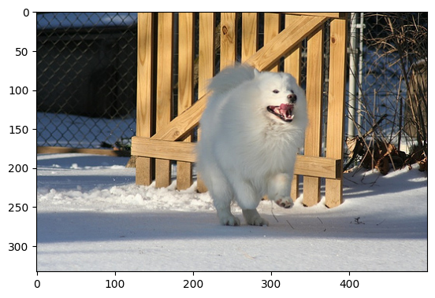
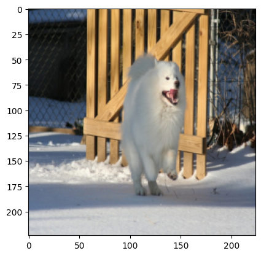
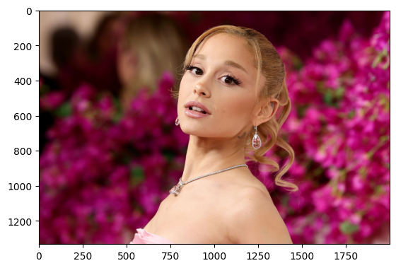
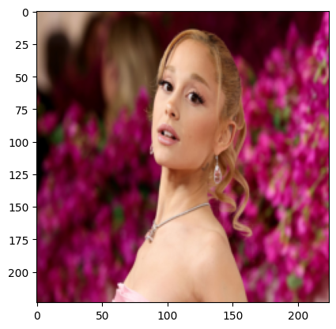

import torch
import torchvision
import matplotlib.pyplot as plt10wk-2: 시벤코정리의 한계

1. 강의영상
2. Imports
3. FashionMNIST
A. 평범한 학습
- 데이터
train_dataset = torchvision.datasets.FashionMNIST(root='./data', train=True, download=True,transform=torchvision.transforms.ToTensor())
test_dataset = torchvision.datasets.FashionMNIST(root='./data', train=False, download=True,transform=torchvision.transforms.ToTensor())
X,y = next(iter(torch.utils.data.DataLoader(train_dataset,batch_size=60000)))
XX,yy = next(iter(torch.utils.data.DataLoader(test_dataset,batch_size=10000)))- 2d를 처리하고 flatten하는 네트워크
net1 = torch.nn.Sequential(
torch.nn.Conv2d(in_channels=1,out_channels=16,kernel_size=5),
torch.nn.ReLU(),
torch.nn.MaxPool2d(kernel_size=2),
torch.nn.Flatten()
)net1(X).shapetorch.Size([60000, 2304])출력은 (n,2304)으로 정리되어서 나온다. 이 시점부터는 더 이상 이미지가 입력이라고 생각하지 않아도 되고, 단순히 (n, 2304) 크기의 숫자 데이터가 입력으로 주어진 것처럼 보면 된다. 즉 이제부터는 이 (n,2304) 데이터를 입력으로 받는 신경망을 설계하면 된다.
- 1d를 처리하는 네트워크
net2= torch.nn.Sequential(
torch.nn.Linear(2304,10),
)net2(net1(X)).shapetorch.Size([60000, 10])- 두 네트워크를 결합
net = torch.nn.Sequential(
net1,
net2
)
net(X).shapetorch.Size([60000, 10])- 최종적인 코드
X = X.to("cuda:0")
y = y.to("cuda:0")
net = torch.nn.Sequential(
net1,
net2
).to("cuda:0")
loss_fn = torch.nn.CrossEntropyLoss()
optimizr=torch.optim.Adam(net.parameters())
#---#
for epoc in range(100):
#1
Logits = net(X)
#2
loss = loss_fn(Logits,y)
#3
loss.backward()
#4
optimizr.step()
optimizr.zero_grad()(net(X).argmax(axis=1) == y).float().mean()tensor(0.8458, device='cuda:0')net.to("cpu")Sequential(
(0): Sequential(
(0): Conv2d(1, 16, kernel_size=(5, 5), stride=(1, 1))
(1): ReLU()
(2): MaxPool2d(kernel_size=2, stride=2, padding=0, dilation=1, ceil_mode=False)
(3): Flatten(start_dim=1, end_dim=-1)
)
(1): Sequential(
(0): Linear(in_features=2304, out_features=10, bias=True)
)
)(net(XX).argmax(axis=1) == yy).float().mean()tensor(0.8340)B. val 이용
train_dataset = torchvision.datasets.FashionMNIST(root='./data', train=True, download=True,transform=torchvision.transforms.ToTensor())
test_dataset = torchvision.datasets.FashionMNIST(root='./data', train=False, download=True,transform=torchvision.transforms.ToTensor())len(train_dataset), len(test_dataset)(60000, 10000)train_dataset, valid_dataset = torch.utils.data.random_split(train_dataset, [0.8, 0.2])len(train_dataset), len(valid_dataset), len(test_dataset)(48000, 12000, 10000)X,y = next(iter(torch.utils.data.DataLoader(train_dataset,batch_size=48000)))
XX,yy = next(iter(torch.utils.data.DataLoader(valid_dataset,batch_size=12000)))
XXX,yyy = next(iter(torch.utils.data.DataLoader(test_dataset,batch_size=10000)))- 학습해보자
X = X.to("cuda:0")
y = y.to("cuda:0")
XX = XX.to("cuda:0")
yy = yy.to("cuda:0")
net = torch.nn.Sequential(
torch.nn.Conv2d(in_channels=1,out_channels=16,kernel_size=5),
torch.nn.ReLU(),
torch.nn.MaxPool2d(kernel_size=2),
torch.nn.Flatten(),
torch.nn.Linear(2304,10)
).to("cuda:0")
loss_fn = torch.nn.CrossEntropyLoss()
optimizr=torch.optim.Adam(net.parameters())
#---#
for epoch in range(100):
#1
Logits = net(X)
#2
loss = loss_fn(Logits,y)
#3
loss.backward()
#4
optimizr.step()
optimizr.zero_grad()
# 기다리기 심심하니까 + α
if (epoch+1) % 10 == 0:
train_acc = (net(X).argmax(axis=1) == y).float().mean()
val_acc = (net(XX).argmax(axis=1) == yy).float().mean()
print(f"epoch = {epoch+1} / train acc = {train_acc:.4f} / val acc = {val_acc:.4f}")epoch = 10 / train acc = 0.7031 / val acc = 0.7021
epoch = 20 / train acc = 0.7325 / val acc = 0.7283
epoch = 30 / train acc = 0.7537 / val acc = 0.7487
epoch = 40 / train acc = 0.7759 / val acc = 0.7719
epoch = 50 / train acc = 0.7981 / val acc = 0.7937
epoch = 60 / train acc = 0.8141 / val acc = 0.8107
epoch = 70 / train acc = 0.8263 / val acc = 0.8242
epoch = 80 / train acc = 0.8341 / val acc = 0.8338
epoch = 90 / train acc = 0.8394 / val acc = 0.8375
epoch = 100 / train acc = 0.8450 / val acc = 0.8444net.to("cpu")Sequential(
(0): Conv2d(1, 16, kernel_size=(5, 5), stride=(1, 1))
(1): ReLU()
(2): MaxPool2d(kernel_size=2, stride=2, padding=0, dilation=1, ceil_mode=False)
(3): Flatten(start_dim=1, end_dim=-1)
(4): Linear(in_features=2304, out_features=10, bias=True)
)(net(XXX).argmax(axis=1) == yyy).float().mean()tensor(0.8341)- 질문!! 교수님 이렇게 하면 안되나요?
#---#
for epoch in range(100):
net.to("cuda:0")
# step1
# step2
# step3
# step4
# 기다리기 심심하니까 + α
net.to("cpu")
...- 네 안됩니다.
사실 반농담식으로 val을 쓰는 이유를 설명했는데 이거 습관화하면 매우 좋습니다. (기본중에 기본입니다)
4. CIFAR10
A. 데이터
train_dataset = torchvision.datasets.CIFAR10(root='./data', train=True, download=True,transform=torchvision.transforms.ToTensor())
test_dataset = torchvision.datasets.CIFAR10(root='./data', train=False, download=True,transform=torchvision.transforms.ToTensor())len(train_dataset), len(test_dataset)(50000, 10000)train_dataset, valid_dataset = torch.utils.data.random_split(train_dataset, [0.8,0.2])torch.manual_seed(0)
X,y = next(iter(torch.utils.data.DataLoader(train_dataset,batch_size=40000,shuffle=True)))
XX,yy = next(iter(torch.utils.data.DataLoader(valid_dataset,batch_size=10000,shuffle=True)))
XXX,yyy = next(iter(torch.utils.data.DataLoader(test_dataset,batch_size=10000,shuffle=True)))X[0].shapetorch.Size([3, 32, 32])X[0].permute(1,2,0).shapetorch.Size([32, 32, 3])plt.imshow(X[0].permute(1,2,0))
- 이게 뭐야?
y[0]tensor(7)test_dataset.class_to_idx{'airplane': 0,
'automobile': 1,
'bird': 2,
'cat': 3,
'deer': 4,
'dog': 5,
'frog': 6,
'horse': 7,
'ship': 8,
'truck': 9}B. 직접설계
ds_train = torch.utils.data.TensorDataset(X,y)
#ds_val = torch.utils.data.TensorDataset(XX,yy) # 굳이?
#ds_test = torch.utils.data.TensorDataset(XXX,yyy) # 굳이?
dl_train = torch.utils.data.DataLoader(ds_train,batch_size=200,shuffle=True)
#dl_val = torch.utils.data.DataLoader(ds_val,batch_size=200,shuffle=False) # 굳이?
#dl_test = torch.utils.data.DataLoader(ds_test,batch_size=200,shuffle=False) # 굳이?torch.manual_seed(0)
net = torch.nn.Sequential(
torch.nn.Conv2d(3,32,kernel_size=5),
torch.nn.ReLU(),
torch.nn.MaxPool2d(kernel_size=2),
torch.nn.Conv2d(32,32,kernel_size=3),
torch.nn.ReLU(),
torch.nn.Flatten(),
#---#
torch.nn.Linear(4608,100)
).to("cuda:0")
loss_fn = torch.nn.CrossEntropyLoss()
optimizer = torch.optim.Adam(net.parameters())
#---#
for epoc in range(200):
for Xm,ym in dl_train:
Xm = Xm.to("cuda:0")
ym = ym.to("cuda:0")
#1
Logits = net(Xm)
#2
loss = loss_fn(Logits,ym)
#3
loss.backward()
#4
optimizer.step()
optimizer.zero_grad()- 답답해 ㅠㅠ
net.to("cpu")Sequential(
(0): Conv2d(3, 32, kernel_size=(5, 5), stride=(1, 1))
(1): ReLU()
(2): MaxPool2d(kernel_size=2, stride=2, padding=0, dilation=1, ceil_mode=False)
(3): Conv2d(32, 32, kernel_size=(3, 3), stride=(1, 1))
(4): ReLU()
(5): Flatten(start_dim=1, end_dim=-1)
(6): Linear(in_features=4608, out_features=100, bias=True)
)(net(X).argmax(axis=1) == y).float().mean()tensor(0.9933)(net(XX).argmax(axis=1) == yy).float().mean()tensor(0.6123)(net(XXX).argmax(axis=1) == yyy).float().mean()tensor(0.6001)torch.cuda.empty_cache()- 그런데… train_acc를 아래와 같이 계산할수도 있다.
correct = 0
total = 0
for Xm,ym in dl_train:
total = total + len(ym)
correct = correct + (net(Xm).argmax(axis=1) == ym).sum()
acc = correct/total
acctensor(0.9933)- 에폭중 train_acc 와 val_acc를 함께 찍어보자. (뭐 어쩌다 저지경까지 된건지 궁금하기도 하고.. 심심하잖아요)
ds_train = torch.utils.data.TensorDataset(X,y)
ds_val = torch.utils.data.TensorDataset(XX,yy) # 굳이!
# ds_test = torch.utils.data.TensorDataset(XXX,yyy) # 굳이?
dl_train = torch.utils.data.DataLoader(ds_train,batch_size=200,shuffle=True)
dl_val = torch.utils.data.DataLoader(ds_val,batch_size=200,shuffle=False) # 굳이!
# dl_test = torch.utils.data.DataLoader(ds_test,batch_size=200,shuffle=False) # 굳이?net = torch.nn.Sequential(
torch.nn.Conv2d(3,32,kernel_size=5),
torch.nn.ReLU(),
torch.nn.MaxPool2d(kernel_size=2),
torch.nn.Conv2d(32,32,kernel_size=3),
torch.nn.ReLU(),
torch.nn.Flatten(),
#---#
torch.nn.Linear(4608,100)
).to("cuda:0")
loss_fn = torch.nn.CrossEntropyLoss()
optimizer = torch.optim.Adam(net.parameters())
#---#
for epoch in range(200):
for Xm,ym in dl_train:
Xm = Xm.to("cuda:0")
ym = ym.to("cuda:0")
#1
Logits = net(Xm)
#2
loss = loss_fn(Logits,ym)
#3
loss.backward()
#4
optimizer.step()
optimizer.zero_grad()
#---#
if (epoch+1)%20 == 0:
# train_acc
correct = 0
total = 0
for Xm,ym in dl_train:
Xm = Xm.to("cuda:0")
ym = ym.to("cuda:0")
total = total + len(ym)
correct = correct + (net(Xm).argmax(axis=1) == ym).sum()
train_acc = correct/total
# val_acc
correct = 0
total = 0
for XXm,yym in dl_val:
XXm = XXm.to("cuda:0")
yym = yym.to("cuda:0")
total = total + len(yym)
correct = correct + (net(XXm).argmax(axis=1) == yym).sum()
val_acc = correct/total
# print
print(f"epoch = {epoch+1} / train_acc = {train_acc:.4f} / val_acc = {val_acc:.4f}")epoch = 20 / train_acc = 0.7461 / val_acc = 0.6670
epoch = 40 / train_acc = 0.8260 / val_acc = 0.6609
epoch = 60 / train_acc = 0.8809 / val_acc = 0.6467
epoch = 80 / train_acc = 0.9168 / val_acc = 0.6314
epoch = 100 / train_acc = 0.9380 / val_acc = 0.6174
epoch = 120 / train_acc = 0.9660 / val_acc = 0.6151
epoch = 140 / train_acc = 0.9647 / val_acc = 0.6056
epoch = 160 / train_acc = 0.9724 / val_acc = 0.6032
epoch = 180 / train_acc = 0.9796 / val_acc = 0.6047
epoch = 200 / train_acc = 0.9717 / val_acc = 0.5992- test를… 알고싶은데 net.to("cpu") 하지말고 그냥 아래와 같이할까?
def accuracy(dl):
correct = 0
total = 0
for img,lbl in dl:
img = img.to("cuda:0")
lbl = lbl.to("cuda:0")
total = total + len(lbl)
correct = correct + (net(img).argmax(axis=1) == lbl).sum()
acc = correct/total
return acc.item()accuracy(dl_train)0.9717499613761902accuracy(dl_val)0.5992000102996826ds_test = torch.utils.data.TensorDataset(XXX,yyy) # 굳이!
dl_test = torch.utils.data.DataLoader(ds_test,batch_size=1000,shuffle=False) # 굳이!accuracy(dl_test)0.6032999753952026C. renset18
- res: https://arxiv.org/pdf/1512.03385
torch.cuda.empty_cache()net = torchvision.models.resnet18()
net ResNet(
(conv1): Conv2d(3, 64, kernel_size=(7, 7), stride=(2, 2), padding=(3, 3), bias=False)
(bn1): BatchNorm2d(64, eps=1e-05, momentum=0.1, affine=True, track_running_stats=True)
(relu): ReLU(inplace=True)
(maxpool): MaxPool2d(kernel_size=3, stride=2, padding=1, dilation=1, ceil_mode=False)
(layer1): Sequential(
(0): BasicBlock(
(conv1): Conv2d(64, 64, kernel_size=(3, 3), stride=(1, 1), padding=(1, 1), bias=False)
(bn1): BatchNorm2d(64, eps=1e-05, momentum=0.1, affine=True, track_running_stats=True)
(relu): ReLU(inplace=True)
(conv2): Conv2d(64, 64, kernel_size=(3, 3), stride=(1, 1), padding=(1, 1), bias=False)
(bn2): BatchNorm2d(64, eps=1e-05, momentum=0.1, affine=True, track_running_stats=True)
)
(1): BasicBlock(
(conv1): Conv2d(64, 64, kernel_size=(3, 3), stride=(1, 1), padding=(1, 1), bias=False)
(bn1): BatchNorm2d(64, eps=1e-05, momentum=0.1, affine=True, track_running_stats=True)
(relu): ReLU(inplace=True)
(conv2): Conv2d(64, 64, kernel_size=(3, 3), stride=(1, 1), padding=(1, 1), bias=False)
(bn2): BatchNorm2d(64, eps=1e-05, momentum=0.1, affine=True, track_running_stats=True)
)
)
(layer2): Sequential(
(0): BasicBlock(
(conv1): Conv2d(64, 128, kernel_size=(3, 3), stride=(2, 2), padding=(1, 1), bias=False)
(bn1): BatchNorm2d(128, eps=1e-05, momentum=0.1, affine=True, track_running_stats=True)
(relu): ReLU(inplace=True)
(conv2): Conv2d(128, 128, kernel_size=(3, 3), stride=(1, 1), padding=(1, 1), bias=False)
(bn2): BatchNorm2d(128, eps=1e-05, momentum=0.1, affine=True, track_running_stats=True)
(downsample): Sequential(
(0): Conv2d(64, 128, kernel_size=(1, 1), stride=(2, 2), bias=False)
(1): BatchNorm2d(128, eps=1e-05, momentum=0.1, affine=True, track_running_stats=True)
)
)
(1): BasicBlock(
(conv1): Conv2d(128, 128, kernel_size=(3, 3), stride=(1, 1), padding=(1, 1), bias=False)
(bn1): BatchNorm2d(128, eps=1e-05, momentum=0.1, affine=True, track_running_stats=True)
(relu): ReLU(inplace=True)
(conv2): Conv2d(128, 128, kernel_size=(3, 3), stride=(1, 1), padding=(1, 1), bias=False)
(bn2): BatchNorm2d(128, eps=1e-05, momentum=0.1, affine=True, track_running_stats=True)
)
)
(layer3): Sequential(
(0): BasicBlock(
(conv1): Conv2d(128, 256, kernel_size=(3, 3), stride=(2, 2), padding=(1, 1), bias=False)
(bn1): BatchNorm2d(256, eps=1e-05, momentum=0.1, affine=True, track_running_stats=True)
(relu): ReLU(inplace=True)
(conv2): Conv2d(256, 256, kernel_size=(3, 3), stride=(1, 1), padding=(1, 1), bias=False)
(bn2): BatchNorm2d(256, eps=1e-05, momentum=0.1, affine=True, track_running_stats=True)
(downsample): Sequential(
(0): Conv2d(128, 256, kernel_size=(1, 1), stride=(2, 2), bias=False)
(1): BatchNorm2d(256, eps=1e-05, momentum=0.1, affine=True, track_running_stats=True)
)
)
(1): BasicBlock(
(conv1): Conv2d(256, 256, kernel_size=(3, 3), stride=(1, 1), padding=(1, 1), bias=False)
(bn1): BatchNorm2d(256, eps=1e-05, momentum=0.1, affine=True, track_running_stats=True)
(relu): ReLU(inplace=True)
(conv2): Conv2d(256, 256, kernel_size=(3, 3), stride=(1, 1), padding=(1, 1), bias=False)
(bn2): BatchNorm2d(256, eps=1e-05, momentum=0.1, affine=True, track_running_stats=True)
)
)
(layer4): Sequential(
(0): BasicBlock(
(conv1): Conv2d(256, 512, kernel_size=(3, 3), stride=(2, 2), padding=(1, 1), bias=False)
(bn1): BatchNorm2d(512, eps=1e-05, momentum=0.1, affine=True, track_running_stats=True)
(relu): ReLU(inplace=True)
(conv2): Conv2d(512, 512, kernel_size=(3, 3), stride=(1, 1), padding=(1, 1), bias=False)
(bn2): BatchNorm2d(512, eps=1e-05, momentum=0.1, affine=True, track_running_stats=True)
(downsample): Sequential(
(0): Conv2d(256, 512, kernel_size=(1, 1), stride=(2, 2), bias=False)
(1): BatchNorm2d(512, eps=1e-05, momentum=0.1, affine=True, track_running_stats=True)
)
)
(1): BasicBlock(
(conv1): Conv2d(512, 512, kernel_size=(3, 3), stride=(1, 1), padding=(1, 1), bias=False)
(bn1): BatchNorm2d(512, eps=1e-05, momentum=0.1, affine=True, track_running_stats=True)
(relu): ReLU(inplace=True)
(conv2): Conv2d(512, 512, kernel_size=(3, 3), stride=(1, 1), padding=(1, 1), bias=False)
(bn2): BatchNorm2d(512, eps=1e-05, momentum=0.1, affine=True, track_running_stats=True)
)
)
(avgpool): AdaptiveAvgPool2d(output_size=(1, 1))
(fc): Linear(in_features=512, out_features=1000, bias=True)
)net.fc = torch.nn.Linear(512,10)ds_train = torch.utils.data.TensorDataset(X,y)
ds_val = torch.utils.data.TensorDataset(XX,yy) # 굳이!
ds_test = torch.utils.data.TensorDataset(XXX,yyy) # 굳이!
dl_train = torch.utils.data.DataLoader(ds_train,batch_size=200,shuffle=True)
dl_val = torch.utils.data.DataLoader(ds_val,batch_size=200,shuffle=False) # 굳이!
dl_test = torch.utils.data.DataLoader(ds_test,batch_size=200,shuffle=False) # 굳이!net.to("cuda:0")
loss_fn = torch.nn.CrossEntropyLoss()
optimizer = torch.optim.Adam(net.parameters())
#---#
for epoch in range(50):
for Xm,ym in dl_train:
Xm = Xm.to("cuda:0")
ym = ym.to("cuda:0")
#1
Logits = net(Xm)
#2
loss = loss_fn(Logits,ym)
#3
loss.backward()
#4
optimizer.step()
optimizer.zero_grad()
# show
if (epoch+1)%5 == 0:
net.eval()
train_acc = accuracy(dl_train)
val_acc = accuracy(dl_val)
print(f"epoch = {epoch+1} / train_acc = {train_acc:.4f} / val_acc = {val_acc:.4f}")
net.train()epoch = 5 / train_acc = 0.7947 / val_acc = 0.6854
epoch = 10 / train_acc = 0.9260 / val_acc = 0.7088
epoch = 15 / train_acc = 0.9448 / val_acc = 0.7043
epoch = 20 / train_acc = 0.9477 / val_acc = 0.6999
epoch = 25 / train_acc = 0.9725 / val_acc = 0.7209
epoch = 30 / train_acc = 0.9376 / val_acc = 0.6923
epoch = 35 / train_acc = 0.9878 / val_acc = 0.7352
epoch = 40 / train_acc = 0.9809 / val_acc = 0.7307
epoch = 45 / train_acc = 0.9731 / val_acc = 0.7089
epoch = 50 / train_acc = 0.9824 / val_acc = 0.7299- 오버피팅이 있어보긴하지만 표현력자체는 올라감
accuracy(dl_test)0.7311999797821045torch.cuda.empty_cache()D. resnet18, pretrained=True
- 아이디어: 하나를 잘하는 모델은 다른것도 잘하지 않을까? <– transfer learning
net = torchvision.models.resnet18(pretrained=True) # 아키텍처 + 학습된 가중치까지
net.fc = torch.nn.Linear(512,10)/home/cgb5/Dropbox/02-lec/DL2026/.venv/lib/python3.10/site-packages/torchvision/models/_utils.py:208: UserWarning: The parameter 'pretrained' is deprecated since 0.13 and may be removed in the future, please use 'weights' instead.
warnings.warn(
/home/cgb5/Dropbox/02-lec/DL2026/.venv/lib/python3.10/site-packages/torchvision/models/_utils.py:223: UserWarning: Arguments other than a weight enum or `None` for 'weights' are deprecated since 0.13 and may be removed in the future. The current behavior is equivalent to passing `weights=ResNet18_Weights.IMAGENET1K_V1`. You can also use `weights=ResNet18_Weights.DEFAULT` to get the most up-to-date weights.
warnings.warn(msg)net.to("cuda:0")
loss_fn = torch.nn.CrossEntropyLoss()
optimizer = torch.optim.Adam(net.parameters())
#---#
for epoch in range(50):
for Xm,ym in dl_train:
Xm = Xm.to("cuda:0")
ym = ym.to("cuda:0")
#1
Logits = net(Xm)
#2
loss = loss_fn(Logits,ym)
#3
loss.backward()
#4
optimizer.step()
optimizer.zero_grad()
# show
if (epoch+1)%5 == 0:
net.eval()
train_acc = accuracy(dl_train)
val_acc = accuracy(dl_val)
print(f"epoch = {epoch+1} / train_acc = {train_acc:.4f} / val_acc = {val_acc:.4f}")
net.train()epoch = 5 / train_acc = 0.9384 / val_acc = 0.7965
epoch = 10 / train_acc = 0.9613 / val_acc = 0.7912
epoch = 15 / train_acc = 0.9755 / val_acc = 0.7934
epoch = 20 / train_acc = 0.9798 / val_acc = 0.7953
epoch = 25 / train_acc = 0.9876 / val_acc = 0.8085
epoch = 30 / train_acc = 0.9831 / val_acc = 0.7991
epoch = 35 / train_acc = 0.9878 / val_acc = 0.8016
epoch = 40 / train_acc = 0.9937 / val_acc = 0.8064
epoch = 45 / train_acc = 0.9946 / val_acc = 0.8125
epoch = 50 / train_acc = 0.9936 / val_acc = 0.8039- 잘함 (오버피팅은 여전히 있음)
net.eval();torch.cuda.empty_cache()- 사실 생각해보면 뭐 그렇게 신기한건 아님.. 어차피 2D파트는 필터설계라서.. “AI가 이전에 설계한 필터들을 그대로 쓴다” 라는 관점으로 보면 합리적임
5. 옥스포드
A. 데이터
train_dataset = torchvision.datasets.OxfordIIITPet(
root='./data', split='trainval',
target_types="binary-category",
transform = None
)
train_dataset, valid_dataset = torch.utils.data.random_split(train_dataset, [0.8,0.2])
test_dataset = torchvision.datasets.OxfordIIITPet(
root='./data', split='test',
target_types="binary-category",
transform = None
) train_dataset[0][0]train_dataset[0][1]1train_dataset[-1][0]train_dataset[-1][1]0B. transform
- train_dataset[0][0]은 정체가 뭐지? (왜 이미지가 바로나오지?)
type(train_dataset[0][0])PIL.Image.Imagetrain_dataset[0][0] # 이미지가 보여서 좋은데 숫자가 안보임
type(train_dataset)torch.utils.data.dataset.Subset- 숫자화시키고 싶다.
to_tensor = torchvision.transforms.ToTensor()
tsr_img = to_tensor(train_dataset[0][0])
print(tsr_img)
print(tsr_img.shape)
plt.imshow(tsr_img.permute(1,2,0))tensor([[[0.0196, 0.0078, 0.0275, ..., 0.0431, 0.0196, 0.0235],
[0.0196, 0.0275, 0.0196, ..., 0.0353, 0.0314, 0.0275],
[0.0314, 0.0314, 0.0235, ..., 0.0431, 0.0471, 0.0431],
...,
[0.7686, 0.7725, 0.7569, ..., 0.7843, 0.7765, 0.7765],
[0.7647, 0.7490, 0.7451, ..., 0.7647, 0.7804, 0.7922],
[0.7647, 0.7333, 0.7608, ..., 0.7569, 0.7725, 0.7843]],
[[0.0627, 0.0471, 0.0431, ..., 0.0588, 0.0510, 0.0667],
[0.0549, 0.0549, 0.0431, ..., 0.0392, 0.0471, 0.0588],
[0.0627, 0.0588, 0.0588, ..., 0.0431, 0.0549, 0.0471],
...,
[0.7882, 0.7922, 0.7765, ..., 0.7882, 0.7804, 0.7804],
[0.7843, 0.7686, 0.7647, ..., 0.7686, 0.7843, 0.7961],
[0.7843, 0.7529, 0.7804, ..., 0.7608, 0.7765, 0.7882]],
[[0.0784, 0.0431, 0.0471, ..., 0.0706, 0.0627, 0.0745],
[0.0353, 0.0275, 0.0353, ..., 0.0471, 0.0510, 0.0667],
[0.0196, 0.0275, 0.0392, ..., 0.0353, 0.0510, 0.0549],
...,
[0.8000, 0.8078, 0.8000, ..., 0.7961, 0.7882, 0.7882],
[0.8000, 0.7843, 0.7882, ..., 0.7843, 0.8000, 0.8118],
[0.8000, 0.7686, 0.8039, ..., 0.7765, 0.7922, 0.8039]]])
torch.Size([3, 333, 500])
- 숫자화시킨건 좋은데 이미지의 크기가 제각각이겠네?
- 이미지의 크기를 정리해보자.
resize = torchvision.transforms.Resize((224,224))print(tsr_img.shape)
print(resize(tsr_img).shape)torch.Size([3, 333, 500])
torch.Size([3, 224, 224])plt.imshow(tsr_img.permute(1,2,0))
plt.imshow(resize(tsr_img).permute(1,2,0))
- 이러한 변환들을 묶어서~ (왜 이러한 변환을 하느냐? 컴퓨터가 처리하게 좋게하려고)
trans = torchvision.transforms.Compose([
torchvision.transforms.ToTensor(), # 컴퓨터가 처리하기 좋게 숫자화
torchvision.transforms.Resize((224,224)), # 컴퓨터가 처리하기 좋게 이미지의 크기를 (224,224)로 통일
torchvision.transforms.Normalize(
mean=[0.485, 0.456, 0.406],
std =[0.229, 0.224, 0.225]
) # 컴퓨터가 좋아하는 숫자들로
]) trans(train_dataset[0][0])tensor([[[-2.0365, -1.9580, -1.9026, ..., -1.5709, -1.8280, -1.9976],
[-1.9889, -2.0248, -1.9552, ..., -1.6488, -1.9633, -1.9443],
[-1.8301, -1.8034, -1.7267, ..., -1.9830, -2.0309, -1.9294],
...,
[ 1.2400, 1.3939, 1.3894, ..., 1.3130, 1.3221, 1.2799],
[ 1.2169, 1.2976, 1.3200, ..., 1.2386, 1.2951, 1.2804],
[ 1.1652, 1.1975, 1.2940, ..., 1.2122, 1.1989, 1.2741]],
[[-1.8021, -1.8309, -1.7940, ..., -1.4782, -1.7135, -1.7890],
[-1.7645, -1.7828, -1.6710, ..., -1.5615, -1.8699, -1.8178],
[-1.5360, -1.4304, -1.3230, ..., -1.8646, -1.9090, -1.8498],
...,
[ 1.4847, 1.6418, 1.6244, ..., 1.4918, 1.4990, 1.4636],
[ 1.4610, 1.5433, 1.5535, ..., 1.4143, 1.4710, 1.4566],
[ 1.4082, 1.4410, 1.5268, ..., 1.3867, 1.3727, 1.4495]],
[[-1.5919, -1.5659, -1.6147, ..., -1.2681, -1.4624, -1.5199],
[-1.6512, -1.6188, -1.6208, ..., -1.3893, -1.6668, -1.5788],
[-1.2632, -1.1103, -0.9609, ..., -1.6952, -1.7290, -1.6187],
...,
[ 1.7682, 1.9284, 1.8764, ..., 1.7368, 1.7492, 1.6899],
[ 1.7490, 1.8334, 1.7987, ..., 1.6857, 1.7381, 1.7173],
[ 1.7008, 1.7316, 1.7713, ..., 1.6691, 1.6585, 1.7350]]])- 이런식으로 \(i=0,1,2,\dots,n\)에 대하여 trans(train_dataset[i][0])을 수행하면 된다. (for문쓰고싶죠?)
- 그런데 아래와 같이 해도 된다.
train_dataset = torchvision.datasets.OxfordIIITPet(
root='./data', split='trainval',
target_types="binary-category",
transform = trans
)
train_dataset, valid_dataset = torch.utils.data.random_split(train_dataset, [0.8,0.2])
test_dataset = torchvision.datasets.OxfordIIITPet(
root='./data', split='test',
target_types="binary-category",
transform = trans
) len(train_dataset), len(valid_dataset), len(test_dataset)(2944, 736, 3669)train_dataset[0][0]tensor([[[0.5921, 0.6136, 0.6340, ..., 1.0664, 1.0659, 1.1302],
[0.5469, 0.5206, 0.5327, ..., 1.1380, 1.2379, 1.2815],
[0.5600, 0.5152, 0.5459, ..., 1.2513, 1.3112, 1.2832],
...,
[0.9775, 0.9930, 1.0077, ..., 1.0140, 1.0413, 1.0884],
[1.0098, 1.0182, 1.0200, ..., 1.0475, 1.0790, 1.0519],
[1.0047, 1.0047, 0.9918, ..., 1.1024, 1.1151, 1.0176]],
[[0.7138, 0.6968, 0.7062, ..., 1.1322, 1.1316, 1.1973],
[0.6594, 0.6163, 0.5997, ..., 1.2259, 1.3280, 1.3726],
[0.6741, 0.6226, 0.6131, ..., 1.3562, 1.4174, 1.3888],
...,
[1.1288, 1.1446, 1.1597, ..., 1.1922, 1.2202, 1.2683],
[1.1618, 1.1704, 1.1722, ..., 1.2687, 1.3010, 1.2732],
[1.1566, 1.1566, 1.1434, ..., 1.3265, 1.3395, 1.2398]],
[[0.4483, 0.4702, 0.4936, ..., 1.4714, 1.4708, 1.5362],
[0.4228, 0.3959, 0.4115, ..., 1.5647, 1.6663, 1.7107],
[0.4617, 0.4132, 0.4438, ..., 1.6944, 1.7553, 1.7268],
...,
[1.2065, 1.2223, 1.2373, ..., 1.4760, 1.5038, 1.5517],
[1.2394, 1.2479, 1.2498, ..., 1.5381, 1.5702, 1.5426],
[1.2342, 1.2342, 1.2211, ..., 1.5951, 1.6080, 1.5088]]])valid_dataset[0](tensor([[[ 0.0124, 0.0580, 0.0550, ..., -1.2815, -1.2788, -1.3080],
[ 0.0283, 0.1100, 0.0688, ..., -1.3278, -1.3051, -1.3309],
[ 0.0667, 0.1948, 0.1066, ..., -1.3991, -1.3823, -1.3996],
...,
[ 1.3612, 1.4007, 1.2890, ..., -0.4125, -0.4648, -0.5025],
[ 1.3908, 1.4266, 1.3562, ..., -0.4131, -0.4990, -0.5369],
[ 1.4127, 1.3762, 1.3547, ..., -0.5660, -0.5928, -0.7104]],
[[ 0.2875, 0.3286, 0.3012, ..., -1.8631, -2.0003, -2.0357],
[ 0.2987, 0.3731, 0.3154, ..., -1.8637, -1.9913, -2.0357],
[ 0.3622, 0.4604, 0.3542, ..., -1.8609, -1.9740, -2.0304],
...,
[ 0.2541, 0.3185, 0.2447, ..., -1.1851, -1.2386, -1.2771],
[ 0.2839, 0.3449, 0.3134, ..., -1.1857, -1.2735, -1.3122],
[ 0.3343, 0.3368, 0.3321, ..., -1.2944, -1.3347, -1.4549]],
[[ 0.6896, 0.7151, 0.6469, ..., -1.6594, -1.7691, -1.8044],
[ 0.7112, 0.7766, 0.6830, ..., -1.6633, -1.7517, -1.8044],
[ 0.7624, 0.8632, 0.7217, ..., -1.6825, -1.7605, -1.8044],
...,
[ 0.1385, 0.1907, 0.1079, ..., -1.3236, -1.3769, -1.4153],
[ 0.1925, 0.2345, 0.2073, ..., -1.3152, -1.3772, -1.4157],
[ 0.2723, 0.2526, 0.2609, ..., -1.4014, -1.4030, -1.5227]]]),
1)test_dataset[0](tensor([[[-1.6934, -1.7584, -1.7353, ..., 0.9085, 0.8460, 0.7758],
[-1.6882, -1.7412, -1.7343, ..., 1.0436, 0.9914, 0.9536],
[-1.6830, -1.7240, -1.7458, ..., 1.1064, 1.0683, 1.0389],
...,
[-1.2910, -1.2447, -1.1747, ..., 1.0335, 1.0927, 1.1006],
[-1.2230, -1.1679, -1.1054, ..., 1.0169, 1.0678, 1.0035],
[-1.0965, -1.1251, -1.1826, ..., 1.0181, 1.0669, 1.0179]],
[[-1.7906, -1.7729, -1.6829, ..., 0.6694, 0.6090, 0.5372],
[-1.7906, -1.7639, -1.6821, ..., 0.7755, 0.7220, 0.6834],
[-1.7852, -1.7463, -1.7048, ..., 0.7747, 0.7303, 0.7002],
...,
[-1.3309, -1.3010, -1.2502, ..., -0.2159, -0.0762, -0.0049],
[-1.2089, -1.1790, -1.1700, ..., -0.2120, -0.0924, -0.0983],
[-1.2893, -1.2472, -1.2463, ..., -0.2569, -0.0580, -0.2532]],
[[-1.5709, -1.5686, -1.4852, ..., 0.6393, 0.6020, 0.5306],
[-1.5551, -1.5338, -1.4839, ..., 0.7570, 0.7319, 0.6934],
[-1.5494, -1.4989, -1.4645, ..., 0.7531, 0.7404, 0.7105],
...,
[-1.1377, -1.0992, -1.0384, ..., -0.7361, -0.6289, -0.5788],
[-1.0334, -0.9949, -0.9628, ..., -0.7272, -0.6453, -0.6721],
[-1.1015, -1.0805, -1.1007, ..., -0.6511, -0.6198, -0.6453]]]),
0)C. 적합
- 사실 train_dataset, valid_dataset, test_dataset 은 그자체로 dataset이었음
ds_train = train_dataset
ds_val = valid_dataset
ds_test = test_dataset- 그래서 사실 이거로 바로 데이터로더를 만들수 있음.
dl_train = torch.utils.data.DataLoader(ds_train,batch_size=16,shuffle=True)
dl_val = torch.utils.data.DataLoader(ds_val,batch_size=16,shuffle=False)
dl_test = torch.utils.data.DataLoader(ds_test,batch_size=16,shuffle=False)net = torchvision.models.resnet18(pretrained=True) # 아키텍처 + 학습된 가중치까지
net.fc = torch.nn.Linear(512,2)
loss_fn = torch.nn.CrossEntropyLoss()
optimizer = torch.optim.Adam(net.parameters())
#---#
net.to("cuda:0")
loss_fn = torch.nn.CrossEntropyLoss()
optimizer = torch.optim.Adam(net.parameters())
#---#
for epoch in range(10):
for Xm,ym in dl_train:
Xm = Xm.to("cuda:0")
ym = ym.to("cuda:0")
#1
Logits = net(Xm)
#2
loss = loss_fn(Logits,ym)
#3
loss.backward()
#4
optimizer.step()
optimizer.zero_grad()
# show
if (epoch+1)%2 == 0:
net.eval()
train_acc = accuracy(dl_train)
val_acc = accuracy(dl_val)
print(f"epoch = {epoch+1} / train_acc = {train_acc:.4f} / val_acc = {val_acc:.4f}")
net.train()/home/cgb5/Dropbox/02-lec/DL2026/.venv/lib/python3.10/site-packages/torchvision/models/_utils.py:208: UserWarning: The parameter 'pretrained' is deprecated since 0.13 and may be removed in the future, please use 'weights' instead.
warnings.warn(
/home/cgb5/Dropbox/02-lec/DL2026/.venv/lib/python3.10/site-packages/torchvision/models/_utils.py:223: UserWarning: Arguments other than a weight enum or `None` for 'weights' are deprecated since 0.13 and may be removed in the future. The current behavior is equivalent to passing `weights=ResNet18_Weights.IMAGENET1K_V1`. You can also use `weights=ResNet18_Weights.DEFAULT` to get the most up-to-date weights.
warnings.warn(msg)epoch = 2 / train_acc = 0.9130 / val_acc = 0.8872
epoch = 4 / train_acc = 0.9684 / val_acc = 0.9226
epoch = 6 / train_acc = 0.9749 / val_acc = 0.9484
epoch = 8 / train_acc = 0.9922 / val_acc = 0.9470
epoch = 10 / train_acc = 0.9694 / val_acc = 0.9022net.eval();accuracy(dl_test)0.9116925597190857D. 예측
- 우리 강아지 사진

- 텐서로 만들자
import requests
import io
from PIL import Imagehani = Image.open(io.BytesIO((requests.get("https://github.com/guebin/DL2026/blob/master/imgs/hani1.jpeg?raw=true").content)))
hani
net(trans(hani).reshape(1,3,224,224).to("cuda:0"))tensor([[-3.5995, 3.2960]], device='cuda:0', grad_fn=<AddmmBackward0>)net(trans(hani).reshape(1,3,224,224).to("cuda:0")).softmax(axis=1)tensor([[0.0010, 0.9990]], device='cuda:0', grad_fn=<SoftmaxBackward0>)6. 크롤링
A. 크롤링하기
from pathlib import Path
import httpx
from PIL import Image
from ddgs import DDGS
import timequeries = {
"taylor": [
"Taylor Swift portrait",
"Taylor Swift face",
"Taylor Swift smile",
"Taylor Swift Eras tour",
"Taylor Swift Reputation tour",
"Taylor Swift 1989 tour",
"Taylor Swift Grammy",
"Taylor Swift VMA",
"Taylor Swift AMA",
"Taylor Swift Billboard awards",
"Taylor Swift red carpet",
"Taylor Swift photoshoot",
"Taylor Swift magazine cover",
"Taylor Swift Vogue",
"Taylor Swift Time magazine",
"Taylor Swift interview",
"Taylor Swift live performance",
"Taylor Swift music video",
"Taylor Swift NFL",
"Taylor Swift Blank Space",
"Taylor Swift Anti-Hero",
"Taylor Swift Cruel Summer",
"Taylor Swift Lover",
"Taylor Swift Midnights",
"Taylor Swift Folklore",
"Taylor Swift Bad Blood",
],
"ariana": [
"Ariana Grande",
"Ariana Grande portrait",
"Ariana Grande face",
"Ariana Grande smile",
"Ariana Grande Sweetener tour",
"Ariana Grande Honeymoon tour",
"Ariana Grande Dangerous Woman tour",
"Ariana Grande Grammy",
"Ariana Grande VMA",
"Ariana Grande AMA",
"Ariana Grande Billboard awards",
"Ariana Grande red carpet",
"Ariana Grande photoshoot",
"Ariana Grande magazine cover",
"Ariana Grande Vogue",
"Ariana Grande Wicked premiere",
"Ariana Grande interview",
"Ariana Grande music video",
"Ariana Grande SNL",
"Ariana Grande Thank U Next",
"Ariana Grande 7 Rings",
"Ariana Grande Side To Side",
"Ariana Grande Into You",
"Ariana Grande God Is A Woman",
"Ariana Grande Positions",
"Ariana Grande Sweetener",
"Ariana Grande Problem",
],
}
target_per_class = 200
base_dir = Path.cwd() / "images"
def ddgs_search(q, retries=3):
"""매 호출마다 새 세션 + 재시도."""
for attempt in range(retries):
try:
with DDGS() as ddgs:
return list(ddgs.images(q, region="us-en", max_results=200))
except Exception:
time.sleep(8 + attempt * 5)
return None
with httpx.Client(timeout=10, follow_redirects=True) as client:
for kw, qs in queries.items():
save_dir = base_dir / kw
save_dir.mkdir(parents=True, exist_ok=True)
seen, saved = set(), 0
print(f"\n===== '{kw}' 이미지 다운로드 → {save_dir} =====")
for q in qs:
if saved >= target_per_class:
break
results = ddgs_search(q)
if results is None:
print(f" '{q}': (요청 실패)")
continue
q_saved = 0
for r in results:
if saved >= target_per_class:
break
url = r.get("image")
if not url or url in seen:
continue
seen.add(url)
try:
resp = client.get(url, headers={"User-Agent": "Mozilla/5.0"})
resp.raise_for_status()
ext = url.split("?")[0].split(".")[-1].lower()
if ext not in {"jpg", "jpeg", "png", "gif", "webp"}:
ext = "jpg"
saved += 1
q_saved += 1
(save_dir / f"{kw}_{saved:03d}.{ext}").write_bytes(resp.content)
except Exception:
continue
print(f" '{q}': +{q_saved}장 (누적 {saved})")
print(f"{kw}: 총 {saved}장 저장 (dedup 전)")
# ===== 손상 이미지 제거 =====
for p in base_dir.rglob("*"):
if p.is_file():
try:
with Image.open(p) as im:
im.verify()
except Exception:
print(f"remove broken: {p}")
p.unlink()
===== 'taylor' 이미지 다운로드 → /home/cgb5/Dropbox/02-lec/DL2026/posts/images/taylor =====
'Taylor Swift portrait': +1장 (누적 1)
'Taylor Swift face': +33장 (누적 34)
'Taylor Swift smile': +31장 (누적 65)
'Taylor Swift Eras tour': +34장 (누적 99)
'Taylor Swift Reputation tour': +34장 (누적 133)
'Taylor Swift 1989 tour': +34장 (누적 167)
'Taylor Swift Grammy': +28장 (누적 195)
'Taylor Swift VMA': +5장 (누적 200)
taylor: 총 200장 저장 (dedup 전)
===== 'ariana' 이미지 다운로드 → /home/cgb5/Dropbox/02-lec/DL2026/posts/images/ariana =====
'Ariana Grande': +34장 (누적 34)
'Ariana Grande portrait': +32장 (누적 66)
'Ariana Grande face': +29장 (누적 95)
'Ariana Grande smile': +35장 (누적 130)
'Ariana Grande Sweetener tour': +35장 (누적 165)
'Ariana Grande Honeymoon tour': +35장 (누적 200)
ariana: 총 200장 저장 (dedup 전)B. ds만들기
- 일단 이미지를 좀 가져와보자.
ds_all = torchvision.datasets.ImageFolder(
root=str(base_dir),
transform=None
)ds_all[0][0] # 가져옴 그런데 숫자가 안보임- 숫자가 보이게 해보자. (텐서화)
to_tensor = torchvision.transforms.ToTensor()
to_tensor(_ds[0][0]).shapetorch.Size([3, 1333, 2000])plt.imshow(to_tensor(_ds[0][0]).permute(1,2,0))
- 그런데 이미지의 크기가 제각각이겠네?
- 이미지의 크기를 정리해보자.
resize = torchvision.transforms.Resize((224,224))plt.imshow(resize(to_tensor(_ds[0][0])).permute(1,2,0))
- 이러한 변환들을 묶어서~ (왜 이러한 변환을 하느냐? 컴퓨터가 처리하게 좋게하려고)
trans = torchvision.transforms.Compose([
torchvision.transforms.ToTensor(), # 컴퓨터가 처리하기 좋게 숫자화
torchvision.transforms.Resize((224,224)), # 컴퓨터가 처리하기 좋게 이미지의 크기를 (224,224)로 통일
torchvision.transforms.Normalize(
mean=[0.485, 0.456, 0.406],
std =[0.229, 0.224, 0.225]
)
]) trans(_ds[0][0])NameError: name '_ds' is not defined- 이런식으로 \(i=0,1,2,\dots,n\)에 대하여 trans(_ds[i][0])을 수행하면 된다. (for문쓰고싶죠?)
- 그런데 아래와 같이 해도 된다.
ds = torchvision.datasets.ImageFolder(root=str(base_dir), transform=trans)ds[0][0]tensor([[[ 1.1055, 1.1169, 1.1132, ..., 0.7182, 1.2707, 1.5463],
[ 1.1026, 1.1086, 1.1071, ..., 1.0489, 1.5749, 1.8351],
[ 1.1012, 1.1028, 1.1016, ..., 1.2876, 1.7592, 1.9401],
...,
[-0.4619, -0.5064, -0.4770, ..., 0.6011, 0.6786, 0.7962],
[-0.4830, -0.6035, -0.6038, ..., 0.7560, 0.7977, 0.8762],
[-0.5008, -0.6682, -0.6887, ..., 0.9215, 0.9250, 0.9650]],
[[ 0.7344, 0.7461, 0.7423, ..., -1.6783, -1.3897, -1.1420],
[ 0.7315, 0.7376, 0.7361, ..., -1.5426, -1.1782, -0.9244],
[ 0.7300, 0.7302, 0.7249, ..., -1.3580, -0.9635, -0.7637],
...,
[-1.7725, -1.8061, -1.8318, ..., -0.3264, -0.2236, -0.0483],
[-1.7796, -1.7971, -1.8183, ..., -0.0764, -0.0121, 0.1235],
[-1.7829, -1.7956, -1.7893, ..., 0.1772, 0.1867, 0.2452]],
[[ 0.5351, 0.5467, 0.5429, ..., 0.0735, 0.6678, 0.9539],
[ 0.5322, 0.5382, 0.5367, ..., 0.3836, 0.9702, 1.2387],
[ 0.5307, 0.5352, 0.5421, ..., 0.6563, 1.1995, 1.3977],
...,
[-1.1780, -1.1969, -1.1775, ..., -0.0571, 0.0371, 0.1931],
[-1.2014, -1.2965, -1.2752, ..., 0.1638, 0.2187, 0.3325],
[-1.2125, -1.3414, -1.3386, ..., 0.4130, 0.4152, 0.4361]]])C. dl 만들기
ds_train, ds_test = torch.utils.data.random_split(ds, [0.8, 0.2]) dl_train = torch.utils.data.DataLoader(ds_train, batch_size=8, shuffle=True)
dl_test = torch.utils.data.DataLoader(ds_test, batch_size=8, shuffle=False) D. 학습하기
net = torchvision.models.efficientnet_v2_s(pretrained=True)/home/cgb5/Dropbox/02-lec/DL2026/.venv/lib/python3.10/site-packages/torchvision/models/_utils.py:208: UserWarning: The parameter 'pretrained' is deprecated since 0.13 and may be removed in the future, please use 'weights' instead.
warnings.warn(
/home/cgb5/Dropbox/02-lec/DL2026/.venv/lib/python3.10/site-packages/torchvision/models/_utils.py:223: UserWarning: Arguments other than a weight enum or `None` for 'weights' are deprecated since 0.13 and may be removed in the future. The current behavior is equivalent to passing `weights=EfficientNet_V2_S_Weights.IMAGENET1K_V1`. You can also use `weights=EfficientNet_V2_S_Weights.DEFAULT` to get the most up-to-date weights.
warnings.warn(msg)net.classifier[1] = torch.nn.Linear(1280,2,bias=False)s = 0
for XXm,yym in dl_test:
s = s+(net(XXm).argmax(axis=1) == yym).sum()test_acc = (s/len(ds_test)).item()
test_acc0.36250001192092896loss_fn = torch.nn.CrossEntropyLoss()
optimizer = torch.optim.Adam(net.classifier.parameters())
#---#
net.to("cuda:0")
#---#
for epoch in range(20):
net.train()
for Xm,ym in dl_train:
Xm = Xm.to("cuda:0")
ym = ym.to("cuda:0")
#1
Logits = net(Xm)
#2
loss = loss_fn(Logits,ym)
#3
loss.backward()
#4
optimizer.step()
optimizer.zero_grad()
s = 0
net.eval()
for XXm,yym in dl_test:
XXm = XXm.to("cuda:0")
yym = yym.to("cuda:0")
s = s+(net(XXm).argmax(axis=1) == yym).sum()
test_acc = (s/len(ds_test)).item()
print(f"{epoch+1}에폭 -- test_acc: {test_acc}")1에폭: test_acc: 0.737500011920929
2에폭: test_acc: 0.8375000357627869
3에폭: test_acc: 0.8375000357627869
4에폭: test_acc: 0.8375000357627869
5에폭: test_acc: 0.875
6에폭: test_acc: 0.875
7에폭: test_acc: 0.8375000357627869
8에폭: test_acc: 0.887499988079071
9에폭: test_acc: 0.887499988079071
10에폭: test_acc: 0.875
11에폭: test_acc: 0.875
12에폭: test_acc: 0.875
13에폭: test_acc: 0.862500011920929
14에폭: test_acc: 0.8500000238418579KeyboardInterrupt: